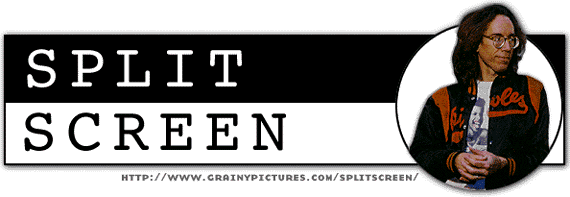

| Episode #7 Credits Some of the Talented Filmmakers Who Work With John Pierson On Split Screen
The Independent Film Channel presents a Grainy Pictures production Split Screen (#7) Created by John & Janet Pierson Producers Howard Bernstein Tim Perell Editor / Michael LaHaie Assoc. Producer Written, co-produced and occasionally directed by John Pierson Opening Theme, The Bao Tao, composed by Tom Pomposello and Art Labriola. Performed by Oil Can. Available on Re:Signed CD Once Were The Pastures of Plenty. Swing Blade Director Nicholas Goodman Writers Chris Cox Matt Sloan Darren Des Voigne Gatorlando Camera Dan Myrick Camera Assist Kevin Burke Special thanks to Lorraine, Matthew, Mike and Siggy at the Florida Film Festival Airboat and helicopter provided by the Orlando Film and Television Office Visit Gatorland, you will not be disappointed! (Universal Studios is pretty good too.) Spread Fred Director/Camera Chris Smith Sound Sarah Price Edited by Bluemark Productions To order "Man With A Plan" call 1-800-434-FRED Check out the "Man With A Plan" Website at www.spreadfred.com. Errol's Reality Camera Chris Smith Sound Sarah Price "Gates of Heaven," "Vernon, Florida" and "Interrotron" clips courtesy of Errol Morris/Fourth Floor Productions. "The Thin Blue Line" clips courtesy of Miramax Films "Fast, Cheap & Out of Control" clips courtesy of Sony Pictures Classics DO NOT MISS THIS MOVIE, OPENING OCTOBER 1997! On-Line Editor Jon Fordham Executive Producers Marlen Hecht Dean Silvers Janet Pierson Special thanks to Jim McDonald and Teatown Video for making it all possible. Read the Miramax/Hyperion paperback SPIKE, MIKE, SLACKERS & DYKES: A Guided Tour Across a Decade of American Independent Cinema (c) 1997 Grainy Pictures, Inc. |